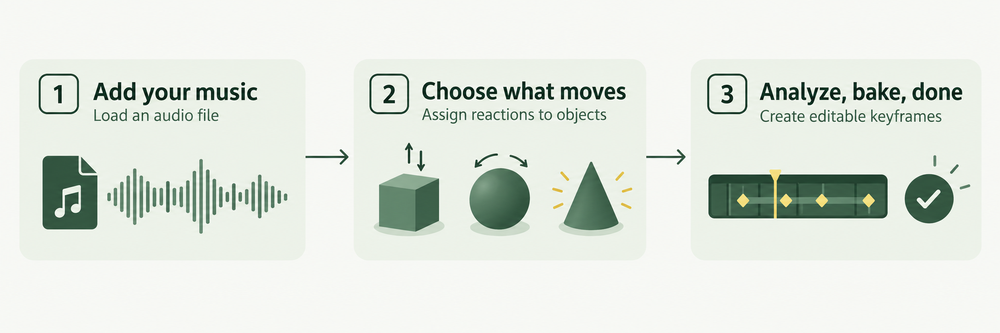
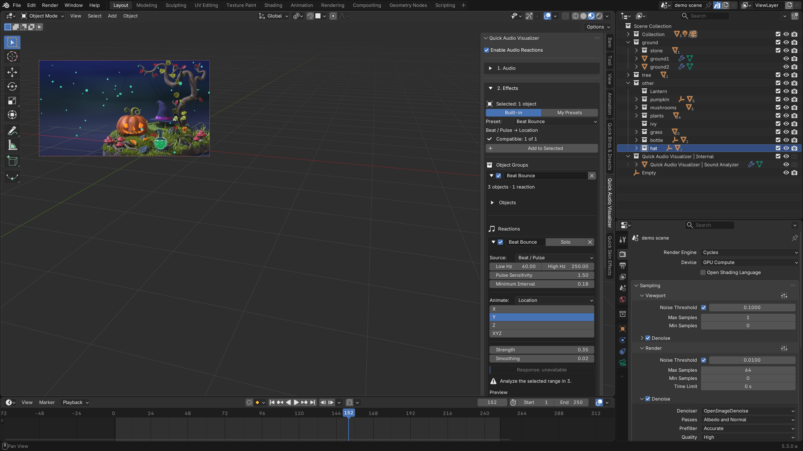
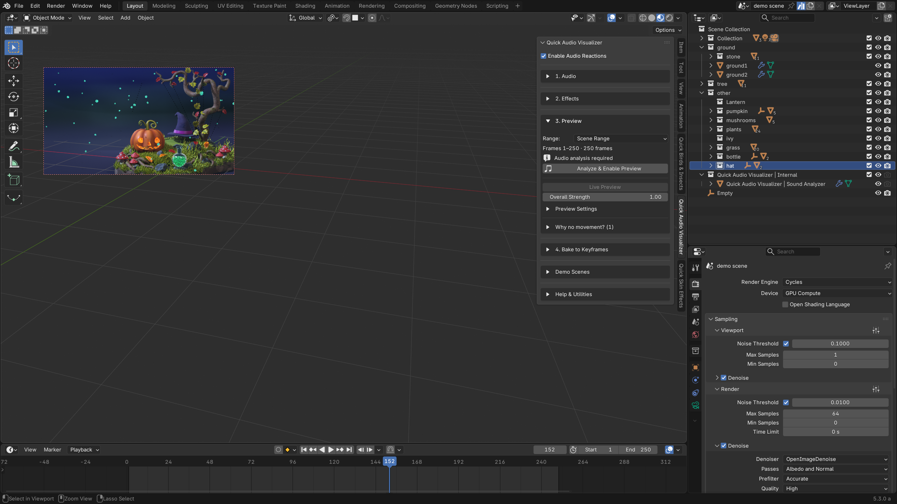
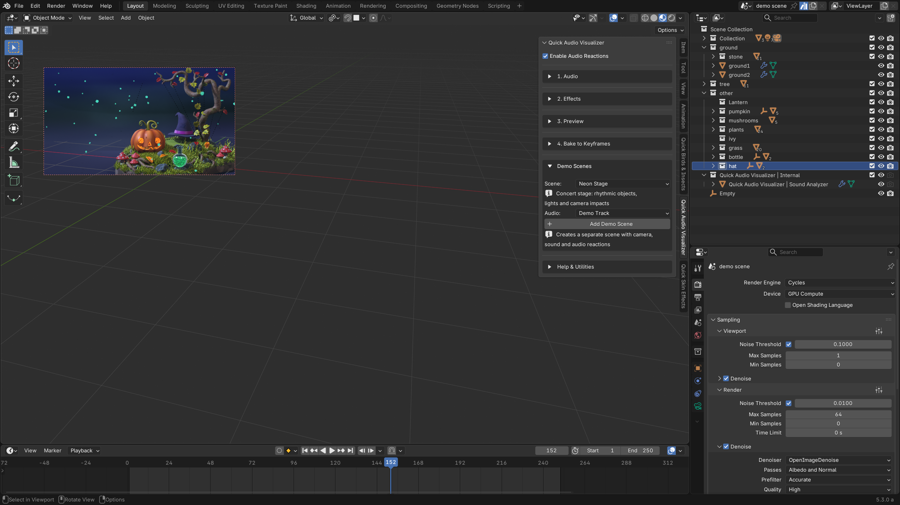
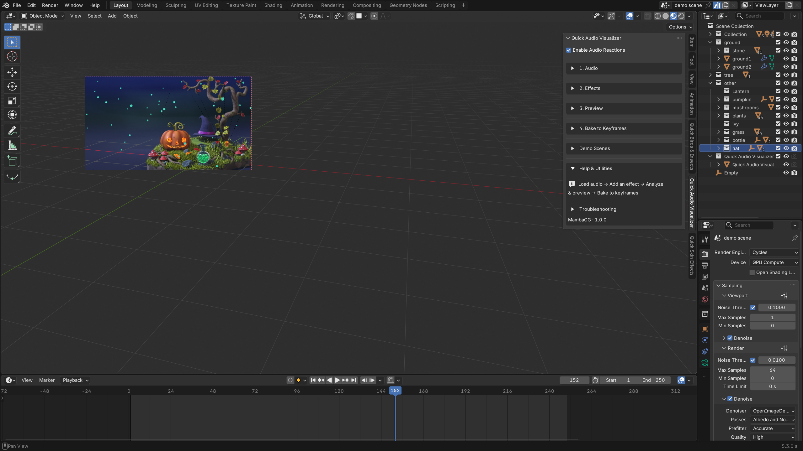
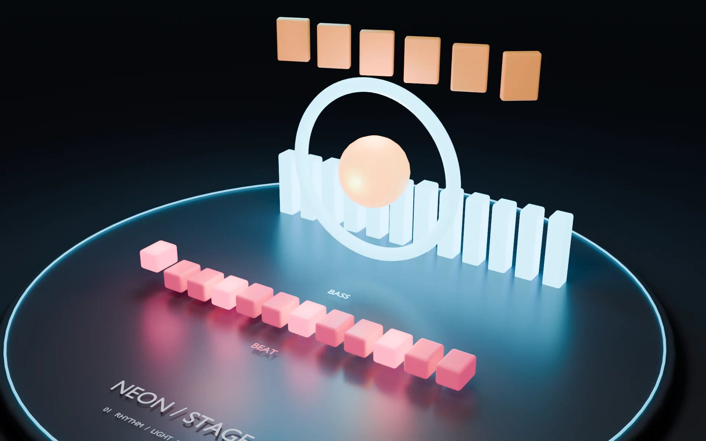
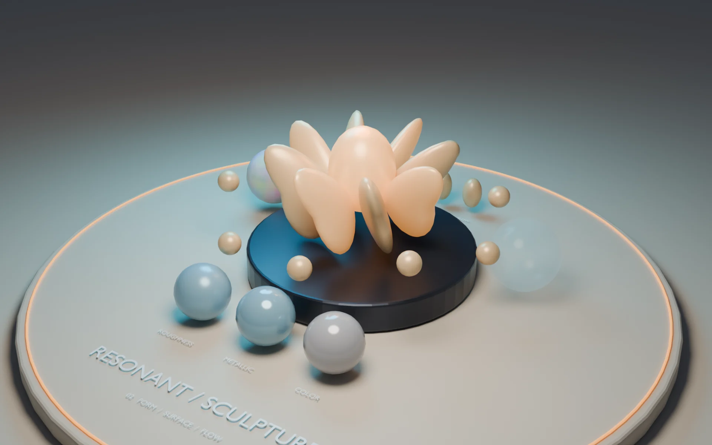
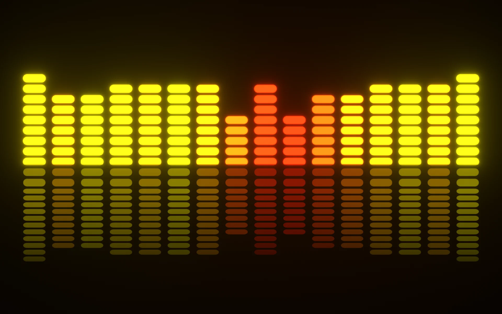
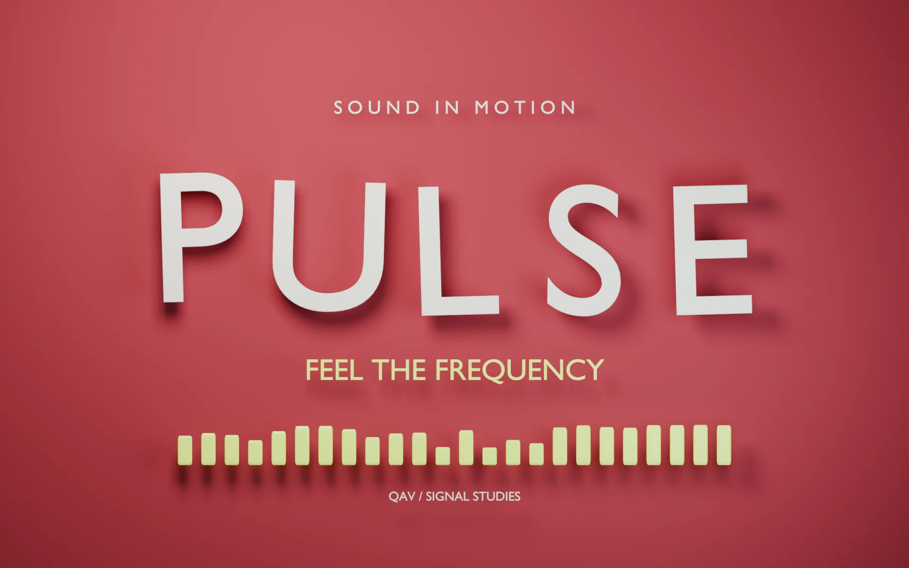
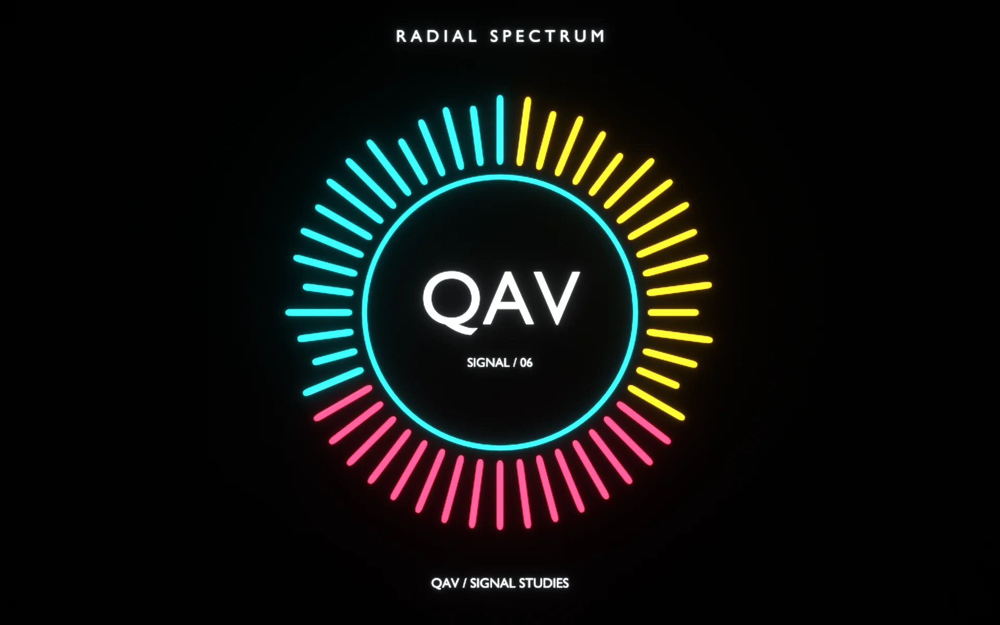

Bring your sound
Load an audio file, set its timing, and listen in Blender. Or start with a demo scene and its included synthesized track.
Load / Replace AudioPulsing lights. Moving shapes. Music you can see.
Turn your audio into editable Blender animation.

Start with your model, your lighting, your camera and your materials. Quick Audio Visualizer lets you choose which objects react, how strongly they move, and which part of the sound drives them.
You are not locked to the included demos. Use a finished environment, a product shot, abstract motion graphics, text, characters, props or procedural setups, then assign audio reactions to the objects that should move.
From a neon stage to a city of sound.
Watch every included scene react to the music.
Choose what moves, decide how it reacts,
and make the rhythm your own.
Load an audio file, set its timing, and listen in Blender. Or start with a demo scene and its included synthesized track.
Load / Replace AudioAssign objects to a group and add a preset. Choose a frequency band, adjust the strength, and shape the response.
Objects + signal + reactionAnalyze the audio and preview your timeline. When the motion feels right, bake to editable keyframes for rendering.
Analyze → Preview → BakeFive panel sections, explained. Open a screenshot to inspect the controls at full size.

EffectsAdd audio-reactive effects to selected objects. Organize groups and adjust the signal, animated property, strength and smoothing.Add audio-reactive effects to selected objects. Organize groups and adjust the signal, animated property, strength and smoothing.

PreviewAnalyze the selected audio range, enable live preview and adjust the overall reaction strength before baking.Analyze the selected audio range, enable live preview and adjust the overall reaction strength before baking.
Turn audio reactions into editable keyframes in a new Action. Choose the range and manage baked animation.

Demo ScenesChoose a demo and its audio, then create a separate scene with a camera, sound and audio reactions.Choose a demo and its audio, then create a separate scene with a camera, sound and audio reactions.

Help & UtilitiesFollow the workflow from loading audio to baking animation, and open troubleshooting when you need help.Follow the workflow from loading audio to baking animation, and open troubleshooting when you need help.
Each demo creates a separate scene with a camera, audio and editable reactions. Explore the setup, then build on it.

Bass-driven rings, bouncing pads, treble accents and reactive lighting bring a miniature concert stage to life.

Explore flowing forms, glowing petals, material reactions and camera focus in a sculptural audio study.

A procedural city connects audio to Geometry Nodes, modifiers and custom properties, with layered reactions.

A classic segmented spectrum, from warm yellow to red, with luminous bars and a fading reflection.

Editable 3D letters pulse to bass, bounce with staggered timing, and catch the treble with bright accents.

48 radial bars surround an editable text logo. Custom frequency ranges turn a simple circle into a living spectrum.
Use a quick preset or build a detailed response.
Every reaction stays yours to adjust.
Separate the deep pulse from the brighter details. Pick a built-in band or define a custom frequency range for each reaction.
Use sound to drive object transforms, lighting, camera settings and materials. Connect a reaction to Geometry Nodes inputs, modifiers, shape keys or custom properties.

Set the strength, threshold, attack and release. Smooth the signal, change the response curve, or add timing and strength variation across your objects.
A focused toolkit for music visualizers, motion graphics and audio-reactive scenes.
Visit MambaCG on SuperhiveYes. Load your own audio file and analyze it to drive your reactions. The demo generator can use either the included synthesized track or the audio you have already loaded.
Yes. Add Demo Scene creates a separate Blender scene with its objects, materials, camera, audio and reaction groups. Inspect the setup, adjust the reactions, replace the sound or change the design.
Use the live preview while developing your scene. Before rendering or exporting animation, use Bake to Keyframes. The resulting keyframes can be edited in Blender. Re-bake after changing the audio or reaction settings.
Beat / Pulse reacts to rising audio transients in a selected frequency band. It is not a musical BPM or tempo detector. Adjust its sensitivity, cooldown and frequency range to suit the track.
Quick Audio Visualizer requires Blender 5.2 or newer. Its audio analysis uses Blender's native sound analysis tools. No separate Python audio packages are required.
Bring your next Blender scene to life with animated wildlife, garden plants and stylized water.